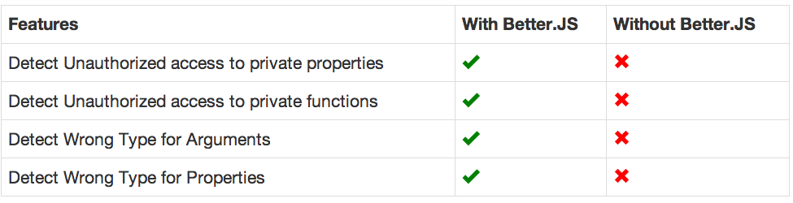
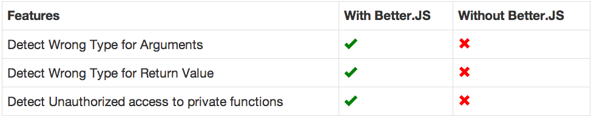
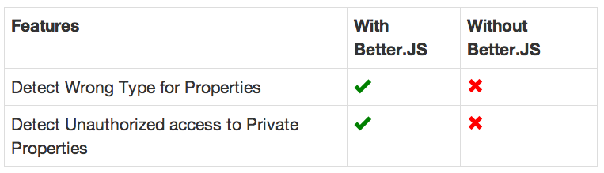

What is Better.js
Better.js Installation In Browser
Better.js Installation In Node.js
Better.js For Functions
Better.js For Properties
Better.js For Classes
take the first 2 lines of the homepages
it is a library
First let do a function to do addition
var add = function(n1,n2){
return n1+n2
}Overload add with a better.js function
add = Bjs.Function(add, {
arguments : [Number, Number]
})Using it with Number, as intented
add(3, 2);
// return 5Using it with wrong type of arguments
add(3, 'two');
// Exception Thrown Invalid Type for Argument 2.
// It should be NumberEarlier bugs detection leads to higher quality code



bower install better.jsWith the usual script tag
<script src="better.js"></script>META: same examples as for node.js
Using the usual npm install line
npm install better.jsUsing the usual require() line
var Bjs = require('better.js')function add(n1,n2){
return n1+n2
}Overload add with a better.js function
var Bjs = require('better')
add = Bjs.Function(add, {
arguments : [Number, Number]
})add('foo', 'bar');
// Exceptionnpm install better.js to install better.jsSee Details in Better.js Function Documentation
Types of arg1, arg2 are verified at every usage
function foo(arg1, arg2){
var value = arg1 + arg2
return value
}Type of returned value are verified at every usage
function add(arg1, arg2){
var value = arg1 + arg2
return value
}add is a private function of a class,function add(arg1, arg2){
var value = arg1 + arg2
return value
}META